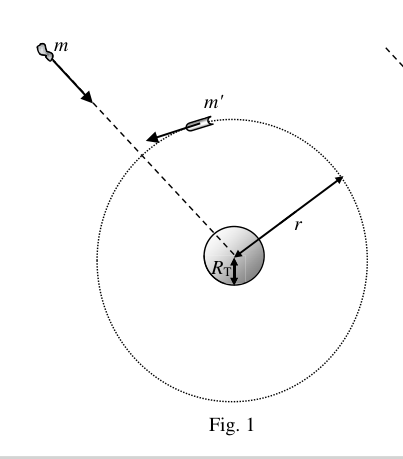
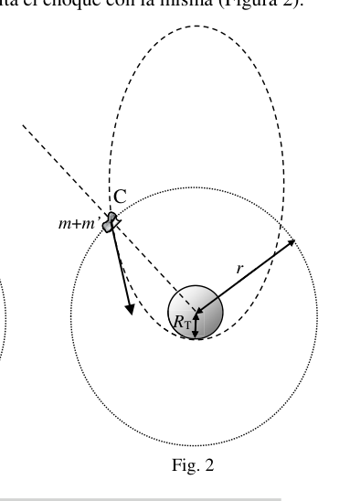

P1. Mira arriba. En la película “No mires arriba” (2021), la estudiante de doctorado Kate Dibiasky descubre cerca de la órbita de Júpiter un meteorito, al que se da el nombre de su descubridora, y que se dirige directamente hacia la Tierra, de 10 km de diámetro, tamaño similar al del meteorito que produjo la extinción de los dinosaurios. Para evitar el impacto del meteorito Dibiasky con la Tierra se programa el lanzamiento de un conjunto de naves que deben chocar contra él y desviar su trayectoria. Vamos a tratar de analizar la viabilidad de semejante misión. Considera (Figura 1) que un meteorito de masa m cae radialmente hacia el centro de la Tierra, partiendo con velocidad igual a cero a una gran distancia de la misma (por simplicidad, despreciamos la interacción gravitatoria del meteorito con el resto de cuerpos del Sistema Solar). A una distancia r de la Tierra un satélite de intercepción de cometas, de masa m’, describe una órbita circular. El satélite y el meteorito tienen una colisión completamente inelástica, saliendo juntos después de la misma, moviéndose el objeto conjunto C en una órbita que es rasante a la Tierra y que, por tanto, evita el choque con la misma (Figura 2). a) ¿Cuál es la velocidad del meteorito y del satélite inmediatamente antes de la colisión? b) ¿Cuál es el vector velocidad del objeto C inmediatamente después de la colisión? Utiliza un vector unitario radial y un vector unitario tangencial a la trayectoria circular del satélite c) Halla la velocidad de C en el perigeo. d) A partir de la conservación de la energía de C, calcula la masa m’ del satélite interceptor necesaria para que el meteorito no impacte con la tierra, en función del radio r de la órbita circular inicial del satélite. Considera que el meteorito Dibiasky tiene una forma aproximadamente esférica y una densidad 3 2,5 g/cm = . La intercepción se produce a una distancia 6 4 10 km r
e) Calcula la masa m del meteorito. f) Determina numéricamente la masa m’ que debe tener el satélite. ¿Consideras viable poner en órbita dicha masa? Dato: Radio de la Tierra: 3 6,37 10 km T R = m’ m RT r m+m’ RT r Fig. 1 Fig. 2 C 33 OLIMPIADA ESPAÑOLA DE FÍSICA FASE DE ARAGÓN P1. Solución a) Para el asteroide 2 1 0 2 ast Mm G mv r +
2 ast M v G r
(1) donde M es la masa de la Tierra. Para el satélite, 2 2 sat v Mm G m r r
sat M v G r
(2) b) En una colisión se conserva el momento lineal. Considerando un vector unitario radial, ru , cuya dirección pasa por el centro de la Tierra y cuyo sentido va hacia el exterior de la misma, y un vector unitario tangencial, tu , tangente a la trayectoria circular del satélite de radio r y aplicando la conservación del momento lineal: 2 ( ) ( ) r t f objeto M M m G u m G u m m v r r +
2 ( ) ( ) ( ) f objeto r t m M m M v G u G u m m r m m r
+ + +
(3) c) El objeto se mueve bajo la acción de la fuerza de la gravedad, orientada hacia el centro de la Tierra. El momento de esta fuerza respecto del centro de la Tierra es cero permanentemente, luego se conserva el momento angular. Tras la colisión el momento angular es ( ) 2 ( ) ( ) ( ) r r t m M m M L m m ru G u G u m m r m m r GM m r k m GMrk r
+
+ +
=
(4) siendo k
un vector unitario perpendicular al plano de la figura 2 y dirigido hacia el lector. En el perigeo el vector velocidad será perpendicular a la dirección radial y el vector momento angular será ( ) p T p L R m m v k
(5) Por la conservación del momento angular, p L L
( ) T p m GMr R m m v
( ) p T m v GMr m m R
+ (6) d) A partir de la velocidad de C obtenida en la ecuación (3), la energía mecánica de C en el punto de impacto es 2 2 2 2 ( ) 1 2 ( ) 2 ( ) ( ) 4 2 mec M m m m GM m GM E G m m r r r m m m m Mm m m G r m m
+ = + + +
+ +
=
+
(7) 33 OLIMPIADA ESPAÑOLA DE FÍSICA FASE DE ARAGÓN En la nueva órbita, tras la colisión, se conserva la energía mecánica, de modo que de la conservación de energía entre el punto de impacto y el perigeo se tiene 2 4 ( ) 1 ( ) 2 2 ( ) T T Mm m m M m m m G G m m GMr r m m R m m R
+ +
= + +
+ +
(8) Arreglando y simplificando la expresión (8) obtenemos una ecuación de segundo grado para m’, ( ) ( ) 2 2 2 4 2 0 T T T T R r m mR R r m rR m +
(9) De donde ( ) 2 2 4 2 T T T T R R rR m m r R + = (10) Como r > RT, la solución con “-“ no tiene sentido físico pues daría un valor negativo de m’, así pues, ( ) 2 2 4 2 0,06 T T T T R R rR m m m r R + + =
(11) e) El radio del meteorito Dibiasky es 3 5km 5 10 m D R
= y su densidad es 3 3 3 2,5g/cm 2,5 10 kg / m =
. Su volumen vendrá dado por 3 4 3 D V R
(12) De modo que su masa será 3 4 3 D m V R
= 15 1,3 10 kg m = (13) f) Sustituyendo m en la expresión (11) obtenemos 13 7,8 10 kg = La tecnología actual no permite poner en órbita una masa tan grande. Una posible solución alternativa, que se sugiere en la película “No mires arriba”, sería enviar cargas nucleares que exploten en la superficie del meteorito, de forma que el material eyectado en la explosión produzca un impulso que lleve a una desviación suficiente. En todo caso, nos movemos en los límites de la ciencia ficción, aunque actualmente se ensayan técnicas de desviación, como es el caso del proyecto DART de la NASA. 33 OLIMPIADA ESPAÑOLA DE FÍSICA FASE DE ARAGÓN

Meteorite in caduta verso la Terra
Satellite intercettore in orbita circolareTopic: Gravitation, Conservation of Momentum, Conservation of Energy Metodi: Conservation of Momentum, Conservation Laws, Torque & Angular Momentum Analysis, Energy Conservation Method Competenze: Mathematical Modeling, Physical Reasoning, Diagrammatic Reasoning Objects: Planet, Satellite Fonte: Testo (PDF) — p.2
P1. Guarda in alto. Nel film “Non guardare sopra” (2021), la dottoressa Kate Dibiasky scopre che L’orbita di Giove è un meteorite, che prende il nome dal suo scopritore, e che si dirige direttamente verso la Terra. Terra, di 10 km di diametro, simile a quella del meteorito che ha prodotto l’estinzione dei dinosauri. Per per evitare l’impatto del meteorito Dibiasky con la Terra è programmata il lancio di un insieme di navi che Dovranno sbattersi contro di lui e deviare il loro percorso. Cercheremo di analizzare la fattibilità di una missione del genere. Considera (Figura 1) che un meteorito di massa m cade radialmente verso il centro della Terra, partendo con velocità pari a zero ad una grande distanza da essa (per semplicità, disprezziamo l’interazione gravità del meteorito con il resto dei corpi del Sistema Solare). A r distanza dalla Terra un satellite di intercepzione di comete, di massa m, descrive un’orbita circolare. Il satellite e il meteorito hanno una Colpissione completamente inelastica, uscendo insieme dopo di esso, spostando l’oggetto insieme C in un’orbita che è rasata verso la Terra e che quindi evita l’impatto con la Terra (Figura 2). a) Qual è la velocità del meteorito e del satellite immediatamente prima della collisione? b) Qual è la velocità vettoriale dell’oggetto C immediatamente dopo la collisione? Utilizza un vettore unitario radial e un vettore unitario tangenziale al percorso circolare del satellite c) Trova la velocità di C nel perigeo. d) Sulla base della conservazione dell’energia di C, si calcola la massa m del satellite interceptor necessario per che il meteorito non colpisca la terra, a seconda del raggio r dell’orbita circolare iniziale del satellite. Considera che il meteorito dibiasky ha una forma circa sferica e una densità 3 2,5 g/cm = . L’intercettazione avviene a distanza 6 4 10 km r
e) Calcola la massa m del meteorito. f) Determina numericamente la massa m che il satellite deve avere. Rite possibile mettere in orbita tale massa? Data: Radio Terra: 3 6,37 10 km T R = m’ m RT r m+m’ RT r Fig. 1 Fig. 2 C 33 Olimpiadi di Fisica in Spagna Fase di ARAGON P1. Soluzione a) Per l’asteroide 2 1 0 2 ast Mm G mv r +
2 ast M v G r
(1) dove M è la massa della Terra. Per il satellite, 2 2 sat v Mm G m r r
sat M v G r
(2) b) In una collisione il momento lineare viene conservato. Considerando un vettore unitario radial, ru , la cui direzione passa attraverso il centro della Terra e il cui senso E’ un vettore unitario tangenziale. Tu , tangente alla traiettoria circolare del radio r satellite e applicando la conservazione del tempo lineare: 2 ( ) ( ) r t f oggetto M M m G u m G u m m v r r +
2 ( ) ( ) ( ) f oggetto r t m M m M v G u G u m m r m m r
+ + +
(3) c) L’oggetto si muove sotto l’azione della forza della gravità, orientata verso il centro della Terra. El Il momento di questa forza rispetto al centro della Terra è zero per sempre, quindi si conserva il momento angolare. Dopo la collisione il momento angolare è ( ) 2 ( ) ( ) ( ) r r t m M m M L m m ru G u G u m m r m m r GM m r k m GMrk r
+
+ +
=
(4) essendo k
un vettore unitario perpendicolare al piano della figura 2 e rivolto verso il lettore. Nel perigeo il vettore di velocità sarà perpendicolare alla direzione radial e il vettore angolare del momento sarà ( ) p T p L R m m v k
(5) Per la conservazione del momento angolare, p L L
( ) T p m GMr R m m v
( ) p T m v GMr m m R
+ (6) d) A partire dalla velocità di C ottenuta nell’equazione (3), l’energia meccanica di C al punto di impatto es 2 2 2 2 ( ) 1 2 ( ) 2 ( ) ( ) 4 2 mec M m m m GM m GM E G m m r r r m m m m Mm m m G r m m
+ = + + +
+ +
=
+
(7) 33 Olimpiadi di Fisica in Spagna Fase di ARAGON La nuova orbita, dopo la collisione, conserva l’energia meccanica, in modo che la conservazione di l’energia tra il punto di impatto e il perigeo si ha 2 4 ( ) 1 ( ) 2 2 ( ) T T Mm m m M m m m G G m m GMr r m m R m m R
+ +
= + +
+ +
(8) Arrangendo e semplificando l’espressione (8) otteniamo un’equazione di secondo grado per m, ( ) ( ) 2 2 2 4 2 0 T T T T R r m mR R r m rR m +
(9) Da dove ( ) 2 2 4 2 T T T T R R rR m m r R + = (10) Come r > RT, la soluzione con - non ha senso fisico perché darebbe un valore negativo di m, quindi, ( ) 2 2 4 2 0,06 T T T T R R rR m m m r R + + =
(11) e) Il radio del meteorito Dibiasky è 3 5km 5 10 m D R
= e la densità è 3 3 3 2,5g/cm 2,5 10 kg / m =
. Il volume verrà dato da 3 4 3 D V R
(12) Quindi la sua massa sarà 3 4 3 D m V R
= 15 1,3 10 kg m = (13) f) Substituendo m nell’espressione (11) otteniamo 13 7,8 10 kg = La tecnologia attuale non permette di mettere in orbita una massa così grande. Una possibile soluzione alternativa, che Il film suggerisce che non guardate sopra, sarebbe inviare cariche nucleari che esplodono sulla superficie del pianeta. La meteorite, così che il materiale ejectato nell’esplosione produce un impulso che porta a una
- Basta deviare. In ogni caso, ci stiamo muovendo nei limiti della fantascienza, anche se attualmente si provano tecniche di deviazione, come il progetto DART della NASA. 33 Olimpiadi di Fisica in Spagna Fase di ARAGON
Meteorite in caduta verso la Terra
Satellite intercettore in orbita circolare
Topic: Gravitation, Conservation of Momentum, Conservation of Energy Metodi: Conservation of Momentum, Conservation Laws, Torque & Angular Momentum Analysis, Energy Conservation Method Competenze: Mathematical Modeling, Physical Reasoning, Diagrammatic Reasoning Objects: Planet, Satellite Fonte: Testo (PDF) — p.2
P1. Look up there. In the film Don’t Look Up (2021), PhD student Kate Dibiasky discovers near the The orbit of Jupiter is a meteorite, named after its discoverer, and heading directly towards the Earth, 10 km in diameter, similar in size to the meteorite that caused the extinction of the dinosaurs. Stop To avoid the impact of the Dibiasky meteorite on Earth, the launch of a set of spacecraft is scheduled. They must collide with him and divert his course. We’re going to try to analyze the feasibility of such a mission. Consider (Figure 1) that a meteorite of m mass falls radially towards the center of the Earth, starting with zero speed at a great distance from it (for simplicity, we despise interaction gravitational pull of the meteorite with the rest of the solar system. At a distance r from Earth a satellite The mean mass of the comet is defined as the mass of the comet. The satellite and the meteorite have a The total collision is completely inelastic, coming together after the same, moving the joint object C in a orbit that is flattened to Earth and therefore avoids collision with Earth (Figure 2). a) What is the speed of the meteorite and satellite immediately before the collision? b) What is the velocity vector of object C immediately after the collision? It uses a unit vector radial and a tangent unit vector to the circular path of the satellite c) Find the velocity of C at the perigee. d) From the conservation of C energy, calculate the m mass of the interceptor satellite needed to that the meteorite does not impact the earth, depending on the radius r of the satellite’s initial circular orbit. He considers the Dibiasky meteorite to have an approximately spherical shape and density 3 2,5 g/cm = . Interception is at a distance 6 4 10 km r
e) Calculate the mass m of the meteorite. f) Determine numerically the mass m the satellite must have. Do you consider it feasible to put it into orbit? What’s the matter? Date: Radio from the Earth: 3 6,37 10 km T R = m’ m RT r m+m’ RT r Fig. 1 Fig. 2 C 33 Spanish Olympics in Physics The following is the list of the categories of products: P1. Solution a) For the asteroid 2 1 0 2 the following: Mm G mv r +
2 the following: M v G r
(1) where M is the mass of the Earth. For the satellite, 2 2 Sat v Mm G m r r
Sat M v G r
(2) (b) In a collision, the linear momentum is preserved. Considering a radial unit vector, ru , whose direction passes through the center of the Earth and whose direction It goes out of the same, and a tangential unit vector, You , tangent to the circular path of the R-r-r-satellite and applying linear momentum conservation: 2 ( ) ( ) r t f object M M m G u m G u m m v r r +
2 ( ) ( ) ( ) f object r t m M m M v G u G u m m r m m r
+ + +
(3) c) The object moves under the action of gravity, oriented toward the center of the Earth. El The moment of this force relative to the center of the Earth is permanently zero, then the angular momentum. After the collision the angular momentum is ( ) 2 ( ) ( ) ( ) r r t m M m M L m m ru G u G u m m r m m r GM m r k m The following is the list of the countries of the European Union: r
+
+ +
=
(4) being k
a unit vector perpendicular to the plane of Figure 2 and directed towards the reader. In perigee the velocity vector will be perpendicular to the radial direction and the angular momentum vector will be ( ) p T p L R m m v k
(5) For the preservation of angular momentum, p L L
( ) T p m GMr R m m v
( ) p T m v GMr m m R
+ (6) d) From the velocity of C obtained in the equation (3), the mechanical energy of C at the point of impact es 2 2 2 2 ( ) 1 2 ( ) 2 ( ) ( ) 4 2
- I’m not. M m m m GM m GM E G m m r r r m m m m Mm m m G r m m
+ = + + +
+ +
=
+
(7) 33 Spanish Olympics in Physics The following is the list of the categories of products: The new orbit, after the collision, retains mechanical energy, so that the conservation of energy between the impact point and the perigee is 2 4 ( ) 1 ( ) 2 2 ( ) T T Mm m m M m m m G G m m GMr r m m R m m R
+ +
= + +
+ +
(8) By arranging and simplifying the expression (8) we get a second-degree equation for m, ( ) ( ) 2 2 2 4 2 0 T T T T R r m mR R r m rR m +
(9) Where did you come from? ( ) 2 2 4 2 T T T T R R rR m m r R + = (10) As r > RT, the solution with - has no physical meaning because it would give a negative value of m, so, ( ) 2 2 4 2 0,06 T T T T R R rR m m m r R + + =
(11) e) The radius of the Dibiasky meteorite is 3 5km 5 10 m D R
= And its density is 3 3 3 2,5g/cm 2,5 10 kg / m =
. Its volume will be given by 3 4 3 D V R
(12) So its mass will be 3 4 3 D m V R
= 15 1,3 10 kg m = (13) f) Substituting m in the expression (11) we get 13 7,8 10 kg = The current technology does not allow such a large mass to be put into orbit. A possible alternative solution, which is It’s suggested in the movie Don’t look up, it would be sending nuclear charges that explode on the surface of the Earth. The meteorite, so that the material ejected in the explosion produces a pulse that leads to a enough deviation. In any case, we’re moving within the boundaries of science fiction, although currently They try diversion techniques, like the NASA DART project. 33 Spanish Olympics in Physics The following is the list of the categories of products:
Meteorite in fall towards the Earth
The following information shall be provided:
Topic: Gravitation, Conservation of Momentum, Conservation of Energy Metodi: Conservation of Momentum, Conservation Laws, Torque & Angular Momentum Analysis, Energy Conservation Method Competenze: Mathematical Modeling, Physical Reasoning, Diagrammatic Reasoning Objects: Planet, Satellite Fonte: Testo (PDF) — p.2